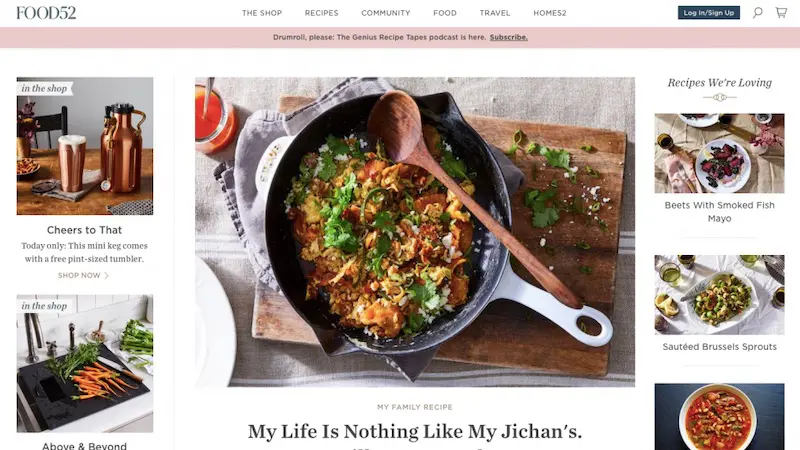

Balanced Bites
A practical combo of online food shop and blog, this one gives you recipes, freshly prepared meals delivered directly to your door, and a blend of spices for even more flavor – all of them, you’ve guessed it, balanced. Balanced Bites acts like your own professional nutritionist, the virtual version, helping especially the busiest of us, those who don’t have any time left for cooking but who won’t compromise on the whole foods and eating healthy front either.
Still, if you find yourself in the kitchen willing to prepare a good balanced meal, the recipes are also provided, ready to impress the cautious foodie in you. And because life is more than food (go figure!), Diane Sanfilippo, the author, invites you to tackle life’s latest in her Diane: Direct.